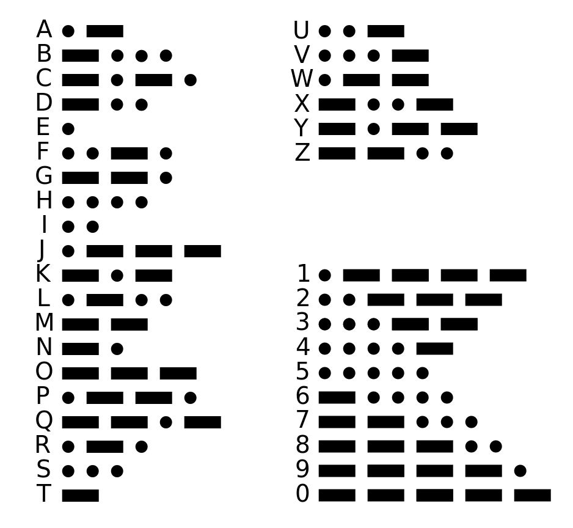

We also have a telegraph key on desktop browser
Latin
Morse
How to use ?
Commands
Space It's like your homemade telegraph key.
Others keys They're blocked.
Text modificationsSwitch off telegraph key mode.
Here some explanation
A "dit" is translate with a "."
A "dat" is translate with a "-"
Space between letters of a word have for length a "dat" (3 "dit").
He's noted with a space.
EXEMPLE -- --- .-. ... . / -.-. --- -.. . (morse code)
dit = 500ms
dat = 2000ms
2000ms between each letters
5000ms between each words
Theses values has been a little bit modified for a better experience.
Learn moreInternational morse code
